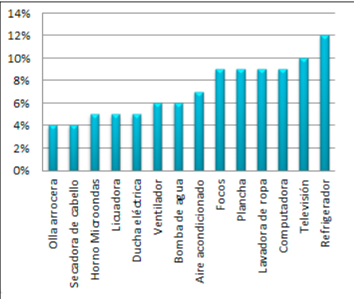

La investigación realizada en el campo de la domótica tuvo como objetivo construir un equipo electrónico de control energético para reducir el consumo de energía en viviendas de clase media. En el proceso investigativo, se midieron las variables temperatura, nivel de iluminación y presencia de personas utilizando sensores en ambientes controlados. Los datos obtenidos permitieron realizar la programación del controlador principal para la toma de decisiones. Se utilizó el hardware y software libre (Arduino y Android), adaptando herramientas de uso común para minimizar su costo de ensamblado. El sistema integra un módulo de seguridad de la vivienda con sistema de alarma integrado al controlador principal mediante una aplicación móvil. Además, se implementó el control por comandos de voz de todos los actuadores de iluminación, climatización y seguridad orientado a personas con capacidades especiales. El prototipo construido fue instalado en el Laboratorio de Investigación, Tecnologías e Innovación (LITI) para su evaluación y diagnóstico dentro de la Pontificia Universidad Católica del Ecuador Sede Esmeraldas (PUCE-SE). Como resultados de la investigación, se obtuvieron datos en los que se evidencia la disminución del consumo de energía eléctrica, se activaron y desactivaron las luminarias mediante comandos de voz y se probó la funcionalidad del equipo con personas de capacidades especiales.
Se puede afirmar según los datos obtenidos, mostrados en la figura, que las personas consideran que los artefactos eléctricos que contribuyen al consumo energético de la vivienda son: refrigeradoras (12%), televisión (10%), computadora (10%) y lavadora de ropa (10%). Con estos datos se diseñó el controlador para contribuir con el ahorro energético de la vivienda.